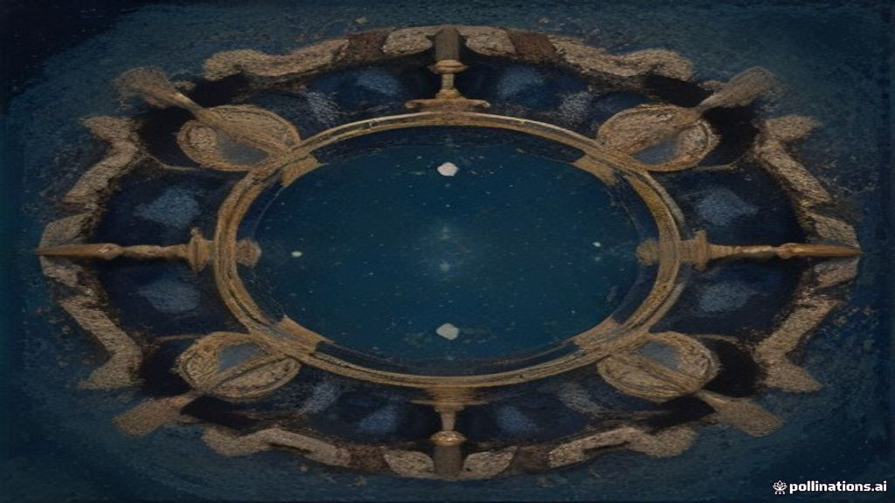

Your Forgotten Money in the Bank: What Happens to Unclaimed Deposits and How to Get Them Back
TL;DR
- Many bank accounts in India have money that hasn't been touched for years, becoming "unclaimed deposits".
- If a deposit is inactive for 10 years, banks transfer this money to a special fund managed by the RBI.
- The RBI recently concluded a one-year scheme (ending September 30, 2026) to accelerate the return of these funds.
- You can search for your or your family's unclaimed deposits using the RBI's UDGAM portal.
- Your money is never lost; you can claim it from your bank at any time, even after it's transferred to the RBI fund.
What's this about?
Imagine you put some money in a bank account or a fixed deposit (FD), and then, for a long time – say, ten years or more – you don't touch it. No withdrawals, no deposits, no updates. This money then becomes what the Reserve Bank of India (RBI) calls an "unclaimed deposit". It's still your money, but because there's been no activity, the bank has to follow specific rules about it.
These unclaimed funds are eventually transferred by banks to a special account with the RBI, known as the Depositor Education and Awareness (DEA) Fund. This fund was set up to ensure your money remains safe and can be claimed whenever you or your legal heirs come forward.
Why it's in the news right now
The issue of unclaimed deposits is in the news because the RBI recently concluded a significant one-year scheme called "Facilitating Accelerated Payout, Inoperative Accounts and Unclaimed Deposits." This scheme, which began on October 1, 2025, officially ended on September 30, 2026. Its main goal was to speed up the process of returning a substantial amount of money – nearly ₹1 lakh crore (around ₹98,073 crore as of January 31, 2026) – that is currently lying unclaimed in various banks and held in the DEA Fund. This initiative built upon the success of an earlier campaign, "100 Days 100 Pays," which showed that active efforts by banks can effectively help reunite depositors with their forgotten funds.
How it actually works
- Becoming Unclaimed: If your savings or current account sees no transactions initiated by you for ten continuous years, or if a fixed deposit isn't claimed within ten years of its maturity date, the balance in that account is classified as an "unclaimed deposit."
- Transfer to DEA Fund: Once a deposit is deemed unclaimed, the bank is required to transfer the amount, along with any accrued interest, to the RBI's Depositor Education and Awareness (DEA) Fund. This fund was established in 2014 under the Banking Regulation Act, 1949.
- Searching for Your Money: To help you find these forgotten funds, the RBI launched the UDGAM (Unclaimed Deposits – Gateway to Access inforMation) portal in August 2023. This online portal allows you to search for unclaimed deposits across multiple participating banks using details like your name and PAN. As of early 2026, 30 banks, covering about 90% of the total unclaimed deposit value, are integrated with UDGAM.
- Claiming the Amount: Even after the money is transferred to the DEA Fund, it remains your property. You or your legal heirs can still approach the concerned bank to claim the amount. The bank will verify your identity and claim, and once approved, it will pay you the money and then seek reimbursement from the RBI's DEA Fund.
A simple way to think about it
Think of your bank account like a locker at a busy railway station. When you use the locker regularly, you know where your things are. But if you leave something in a locker for a very long time – say, ten years – and don't come back for it, the station master might eventually move it to a special "Lost and Found" room. This room is like the RBI's DEA Fund. The item isn't thrown away; it's kept safe. You can still go to the station master, prove it's yours, and get it back. The station master might even try to find you if they have your contact details.
Why it matters to you
- You might have forgotten money: Many people open accounts, move cities, or simply forget about old deposits. Checking for unclaimed funds could mean finding money you didn't know you had.
- Family members might have forgotten money: It's common for older relatives to have multiple bank accounts or FDs that their families are unaware of. The UDGAM portal and bank lists can help legal heirs trace these assets.
- It's your rightful money: The money in the DEA Fund belongs to depositors. The RBI's initiatives are designed to ensure this money is returned to its rightful owners, not kept by the government.
- Promotes financial hygiene: This highlights the importance of keeping your bank accounts active, updating your Know Your Customer (KYC) details regularly, and nominating beneficiaries to prevent your deposits from becoming unclaimed.
- Easier financial overview coming: From January 1, 2027, bank deposit details will also be included in your Consolidated Account Statement (CAS), providing a more complete picture of your financial assets, including mutual funds and demat holdings. This could make it easier to track all your money in one place.
Common confusions cleared up
- Myth: Once money is transferred to the RBI's DEA Fund, it's lost forever or becomes government property.
- Myth: Only large amounts of money become unclaimed.
- Myth: You need to contact the RBI directly to claim your money from the DEA Fund.
Fact: Your money is never lost. It is simply moved to a safe fund managed by the RBI, and you or your legal heirs can claim it from the respective bank at any time.
Fact: Even small balances in old savings accounts can become unclaimed deposits. The total amount of unclaimed deposits is a sum of many such individual amounts, both big and small.
Fact: You must approach the specific bank where the deposit was originally held. The bank will process your claim and then get reimbursed from the DEA Fund by the RBI.
FAQ
What is the Depositor Education and Awareness (DEA) Fund?
The DEA Fund is a special fund established by the RBI in 2014 to hold unclaimed deposits from banks. Its purpose is to protect depositors' interests and promote financial literacy.
How long does it take to claim an unclaimed deposit?
While the RBI's recent scheme aimed to accelerate payouts, the actual time taken can vary depending on the bank and the completeness of your documents. Banks are generally expected to process claims efficiently.
What documents are needed to claim an unclaimed deposit?
You will typically need identity proof (like Aadhaar or PAN), address proof, and documents related to the bank account (e.g., passbook, account statement, FD receipt). If claiming on behalf of a deceased person, you'll also need legal heir certificates or nomination documents.
Can a nominee claim an unclaimed deposit?
Yes, a registered nominee can claim the unclaimed deposit by providing the necessary identification and proof of nomination to the bank.
What if the bank no longer exists or has merged with another bank?
If your original bank has merged with another, the responsibility to process the claim lies with the merged entity. You should contact the successor bank.
Sources
- Uttaradhikari. "RBI's Unclaimed Deposits Scheme Ends September 30, 2026." September 23, 2026.
- Reserve Bank of India. "Depositor Education and Awareness (DEA) Fund."
- Mint. "When does RBI classify bank account as dormant? Here's what rules for reactivation and unclaimed money say." October 4, 2026.
- Mint. "Unclaimed bank deposits near ₹1 lakh crore: How to find forgotten money and claim it through RBI's UDGAM portal." August 12, 2026.
- TELUGU TIMES. "Who Left ₹1 Lakh Crore Behind? RBI Reveals the Shocking Pile of Unclaimed Bank Deposits." August 15, 2026.
- India Policy Hub. "How to Claim Unclaimed Bank Deposits (RBI UDGAM): 2026 Guide." August 10, 2026.
- Business Standard. "Bank deposits join CAS: What you may see, what may still be missing." October 8, 2026.
- Facebook (The Financial Express). "Unclaimed deposits worth over Rs. 35,000 crore transferred to RBI from Public banks." October 8, 2026.
- Facebook (Dainik Jagran). "What happens to your unclaimed bank deposits? Know more about the Depositor Education and Awareness (DEA) Fund and how to seek a refund of your unclaimed amounts from the DEA Fund. Know your rights." September 21, 2026.
- The Economic Times. "UDGAM portal News and Updates from The Economic Times." September 29, 2026.
- Drishti IAS. "RBI's UDGAM Portal." May 7, 2026.
- Testbook. "[Solved] As of early 2026, the UDGAM portal for tracing unclaimed dep."
- Newsonair. "RBI Launches One-Year Scheme to Facilitate Payout of Inoperative Accounts and Unclaimed Deposits." August 3, 2026.
- PIB. "RBI, IRDAI and SEBI Intensify Measures to Help Citizens Reclaim Unclaimed Deposits." March 24, 2026.
- Federal Bank. "Understand RBI's DEA Fund and Its Impact on Deposits."
- Rau's IAS. "Depositor Education and Awareness (DEA) Fund - Compass by Rau's IAS." August 31, 2023.
- Equitypandit. "RBI Launches One-Year Scheme to Facilitate Payout of Inoperative Accounts and Unclaimed Deposits." June 1, 2023.
- Mint. "What is RBI's '100 days, 100 pays' campaign that aims to return unclaimed deposits? Details here." May 19, 2023.
- RBI Press Release. "100 Days 100 Pays." May 12, 2023.